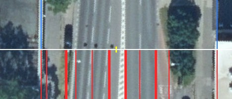

Pasporty slovenských měst: bez pasportu (nahoře, modře) a s pasportem (dole, červeně)
Řez zleva (A) doprava (B), ±10 m podél ulice, 10 px = 1 m. Silné čáry = okraje vozovky, tenké = ostatní hranice, žlutá = střed řezu, * = odhad. Ortofoto © GKÚ Bratislava, NLC (ZBGIS, CC BY 4.0).

901 · Štúrova (nitra)
bez pasportu: nezname 35.5*
s pasportem: chodnik 1.1* · zelen 3.9 · parkovani 2* · pruh 3.35 · pruh 3.35 · delici 3.3* · pruh 2.97 · pruh 3.13 · chodnik 2.75* · zelen 9.65